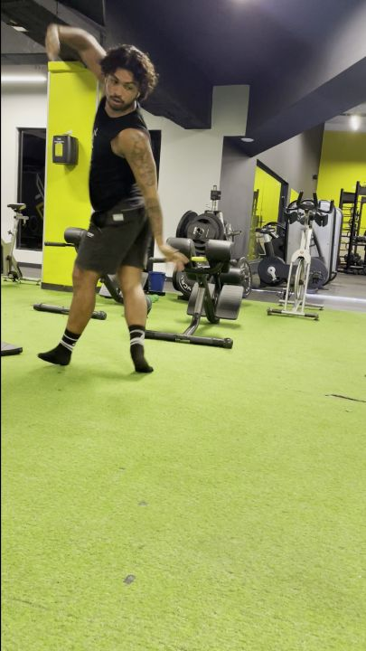
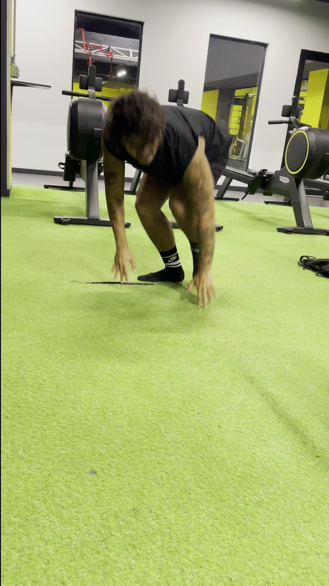
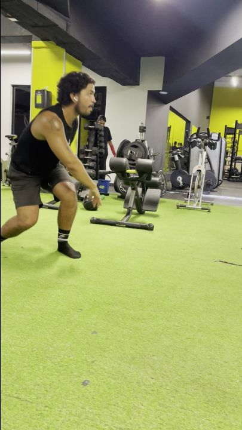
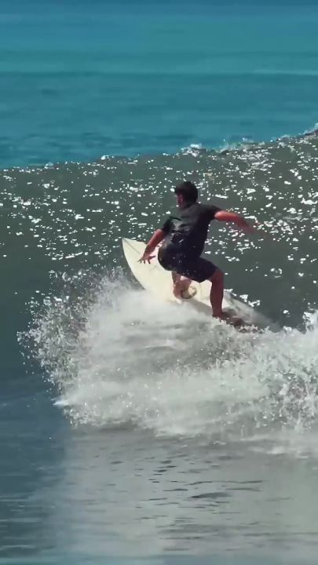
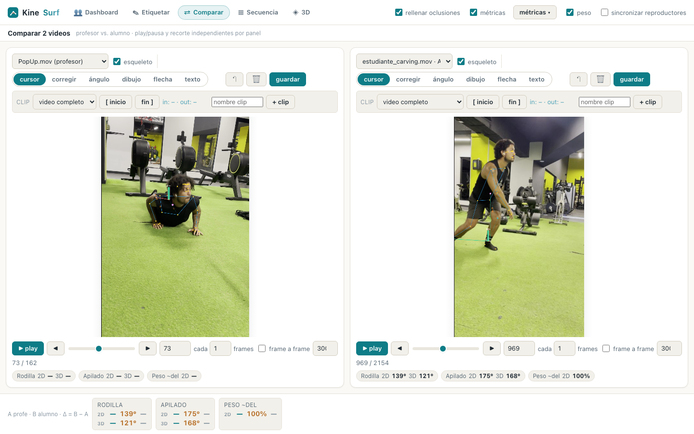
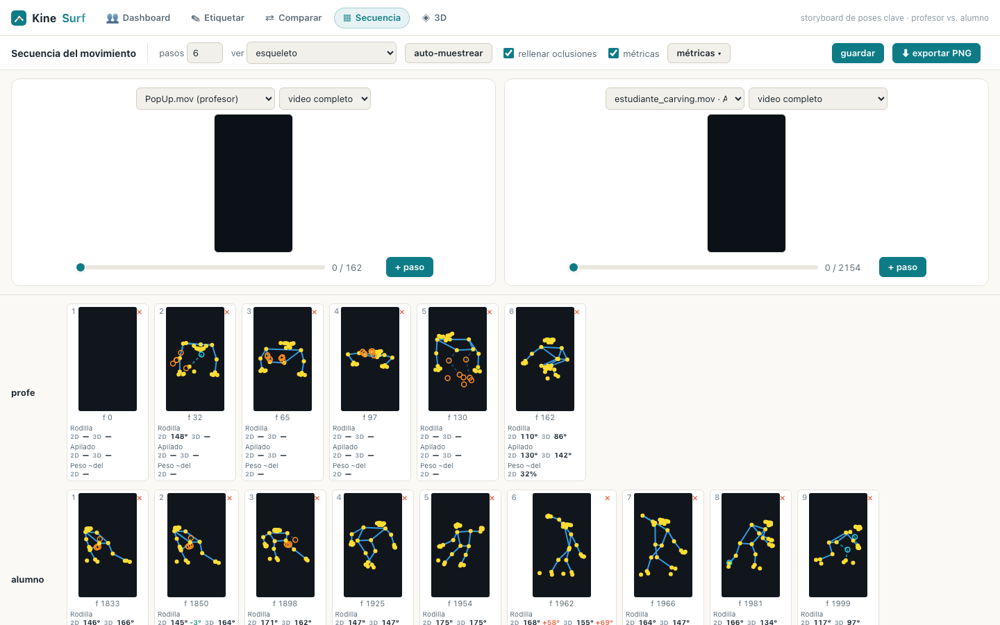
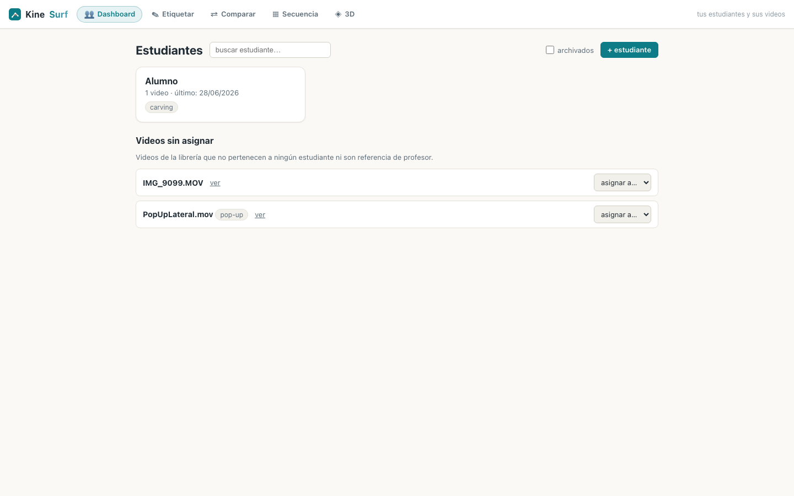

33
puntos corporales por frame

KineSurf mide la técnica de tus estudiantes directamente del video: ángulos articulares reales, distribución de peso y comparación lado a lado contra tu propia técnica.
Las apps de "AI surf coach" generan texto que suena bien. KineSurf mide el cuerpo de tu alumno frame a frame y te da el número — el mismo número, cada vez que lo midas.
Flexión de rodilla, cadera y codo en 2D y 3D. Inclinación de hombros y caderas. Rotación hombros-caderas (X-factor) y apilado del cuerpo sobre la base. Eliges qué métricas ver según la maniobra que estés trabajando.
Centro de masa segmentario proyectado sobre los pies: cuánto peso lleva adelante y atrás, y su balance lateral. La lectura que todo coach hace a ojo — ahora en porcentaje, frame a frame.

Pop-up, carving, cutback: el gesto se entrena en tierra, repetible y filmable, sin esperar condiciones.

KineSurf extrae la pose frame a frame y calcula las métricas. Tú corriges cualquier punto que el video oculte.

Tus propios videos son el patrón: cada alumno se compara contra tu librería de referencias por maniobra.



No le digas a tu alumno que se agache más.
Muéstrale los grados que le faltan.
Un celular en trípode, plano lateral. El alumno entrena la maniobra en tierra — repetible, sin esperar olas.
Extrae la pose frame a frame y calcula las métricas. Tú corriges cualquier punto que el video oculte.
Muestras el Δ contra tu técnica, marcas el objetivo en grados y le envías la infografía al alumno.
Trabajo directamente con cada coach: montamos tu librería de referencias, tus maniobras y tus estudiantes, y te acompaño hasta que la herramienta sea parte de tu método.
Agenda una demo